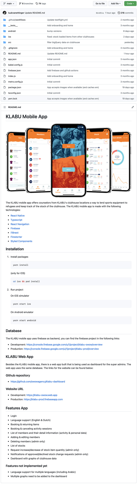

Versie beheer & overdraagbaarheid
De KLABU mobile app is gebouwd en beheerd door middel van het gebruiken van Github. Wanneer ik een feature bouw doe ik dit in een aparte branch en deze wordt door middel van een pull request alleen gemerged naar de main branch als deze door mijn stage begeleider wordt goedgekeurd.
Op deze manier kan mijn begeleider overzicht houden over de code die ik schrijf en mij bijsturen en voorzien van feedback wanneer dit nodig is.
Voor het overdragen van de KLABU mobile app moeten er verschillende zaken duidelijk gedocumenteerd worden voor toekomstige developers die de KLABU mobile app verder willen ontwikkelen.
Op welke wijze moet de KLABU mobile app overdragen worden zodat toekomstige developers hier verder aan kunnen werken?
Voor het overdragen van de code van de KLABU mobile app, zal er een ReadMe gemaakt worden waarin verschillende zaken van het project
duidelijk worden beschreven voor developers die hier in de toekomst verder aan willen werken. De Github repository van de KLABU mobile app is private dus in de resultaten zal deze door middel van een afbeelding te zien zijn.
De volgende zaken zullen in de ReadMe verwerkt worden:
- Korte introductie van het project
- Gebruikte technieken
- Installatie en opstarten van de app op zowel IOS & Android
- Connectie met database
- Connectie met de website/dashboard
- Features van de app
- Features die nog gebouwd moeten worden

Met behulp van de ontworpen ReadMe hebben toekomstige developers een duidelijk overzicht van hoe ze de KLABU mobile app moeten installeren en opstarten. De juiste links voor de backend en voor de website staan in de ReadMe vermeld waardoor een developer die niet bekend is met het project vrij snel het project lokaal draaiend heeft en aanpassingen kan maken.